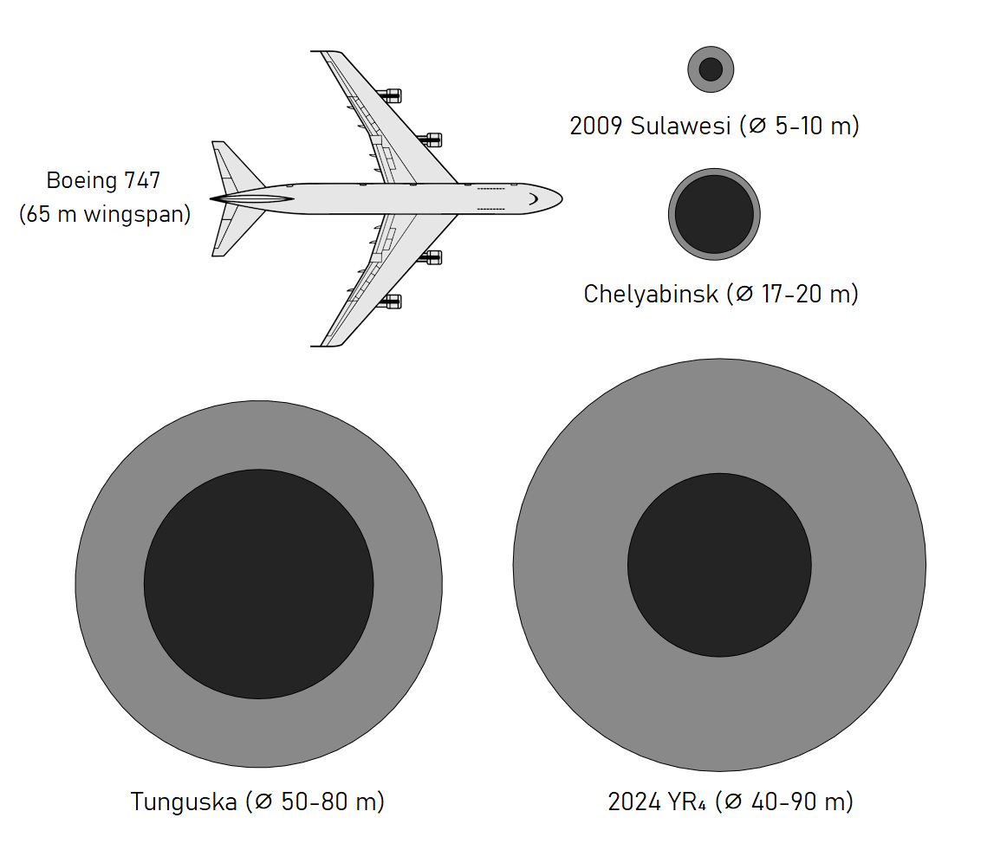

Mars is also special for a very specific reason: it could be self-sufficient. With water available, it is quite literally possible for colonizers to grow plants and mine the surface minerals to create an independent society of Martians. Time will unfold the truth, but as we wait, we must work towards this increasingly hefty feat because achieving it would launch the human race forward technologically, economically, and culturally. It would open up new horizons for expansion and foster a global sense of unity and purpose as humanity collectively works towards becoming a multi-planetary species.
But if there is an asteroid coming right at us, how would we even know? The way Astronomers attempt to find, track, and calculate their paths using survey telescopes and Kepler’s laws. While the first few predictions may be uncertain, more observations try to perfect the path and give us a better understanding of its trajectory. That’s why knowing whether a celestial object is going to hit us takes time to predict and the chance of collision is bound to change.
To make sure we are one step ahead of asteroid impacts, we have international monitoring programs that track asteroid orbits. This way, no asteroid can slip by us and give us an unwelcome surprise. But there are some barriers to our current detection methods. There are difficulties with spotting smaller or fast-moving objects due to the limitations of current technology. While it is possible, it is incredibly difficult to spot them in some niche scenarios, like when they have irregular orbits or are going by the Sun.
Something huge has surfaced recently, and I can guarantee you’ve heard about it—the 2024 YR4 asteroid… DUN DUN DUN! The current chance of this asteroid hitting us is around 1.3%. That alone is scary. In a scenario where we do nothing, we could lose the world we live on 1 out of 100 times. That’s the highest odds we’ve had in years!
Just think about it—you’re sitting on a nice, warm beach, you’ve forgotten all your problems, and you’re just listening to the waves. Then, all of a sudden, you see a large beam of light coming down from the sky. It crashes and blinds your eyes. About three seconds later, you're dead. That could be a real possibility if we don’t take action.
JUST NUKE IT! No… do not just nuke it. That is a horrible idea, and I’ll tell you why. Nuking an asteroid coming at us will just break it into many different pieces. Instead of dealing with just one asteroid, we’d now have to deal with six. Long story short, do not nuke it.
Okay, so what else can we do? The best idea we have currently is to deflect asteroids heading toward us with a satellite. This has been proven to work with the DART mission. In this mission, NASA crashed a satellite directly into an asteroid, successfully deflecting it and giving us hope for future scenarios—such as the one we are living through currently. Granted, it’s estimated to hit us in 2032 as of today, but hey, better to be safe than sorry.